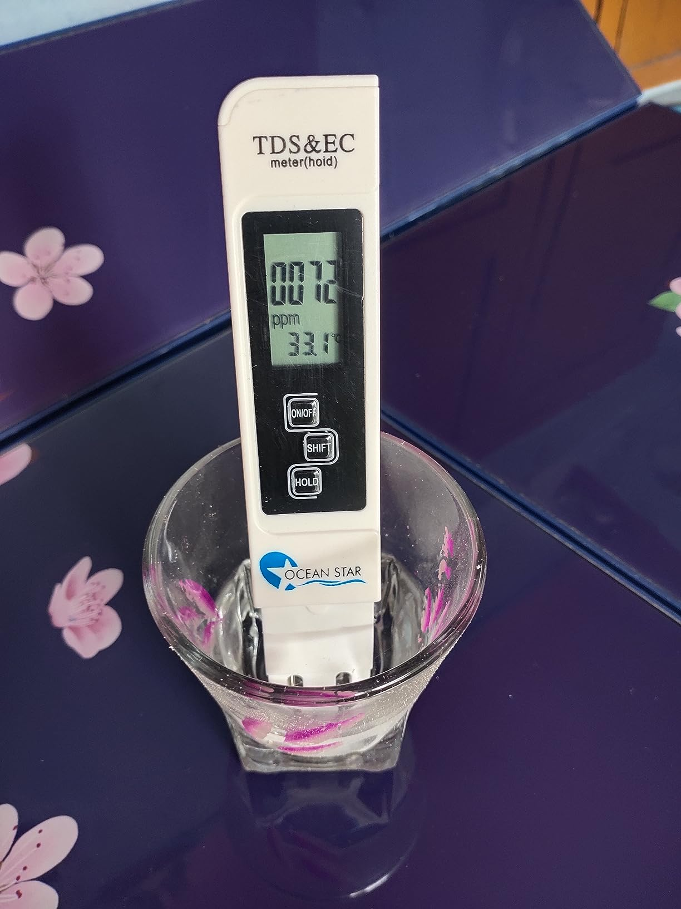

Digital TDS Meter - Water Quality Tester

Price: ₹299
For latest discounts, please click on "Buy Now"
Disclaimer: This site contains affiliate links to products on Amazon, We earn from qualifying purchases to support our website and keep providing great content !
Why you should BUY!
The Digital TDS Meter - Water Quality Tester is an essential tool for ensuring the safety and quality of your drinking water. It accurately measures the total dissolved solids (TDS) in water, providing you with valuable information about its purity. This tester is easy to use, portable, and perfect for home, office, or travel. Ensure your water is safe and healthy with the Digital TDS Meter - Water Quality Tester.Rating: ★★★★☆ (4.3/5) - 44,415 ratings
Key Features
- High Accuracy: Provides precise readings to ensure the safety of your drinking water.
- Easy to Use: Simply dip the meter into the water and get instant results.
- Portable Design: Compact and lightweight, making it easy to carry and use anywhere.
- Wide Range: Measures TDS levels from 0 to 9990 ppm, suitable for various water sources.
- Auto-Off Function: Conserves battery life by automatically turning off after 10 minutes of non-use.
How to USE
Using the Digital TDS Meter - Water Quality Tester is simple and straightforward:
- Remove the protective cap from the tester.
- Turn on the tester by pressing the power button.
- Immerse the tester's probe into the water sample up to the maximum immersion level.
- Wait for the reading to stabilize, which usually takes a few seconds.
- Note the TDS reading displayed on the screen.
- Turn off the tester and dry the probe before storing it back in the protective cap.
Ensure your water is safe and healthy with the Digital TDS Meter - Water Quality Tester!
Buy Now Go BackWhat people think !
"Customers appreciate the build quality, accuracy, and ease of use of this water tester. They find it to be a reliable product that provides consistent readings. Many users value the TDS measurement feature."
Similar products
| Product | Image | Price | Rating | Buy Now |
|---|---|---|---|---|
| GLUN Pre-Calibrated TDS meter |  |
₹169 | 4.0/5 (4,804) | Check |
| OCEAN STAR TDS meter |  | ₹299 | 4.2/5 (248) | Check |
| Konvio TDS meter |  |
₹325 | 4.1/5 (379) | Check |